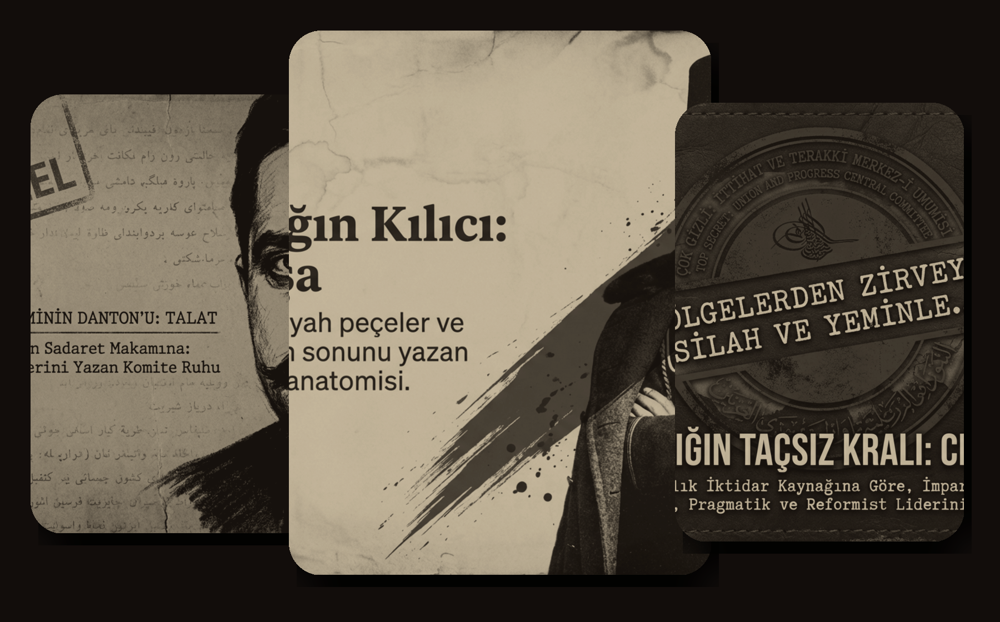
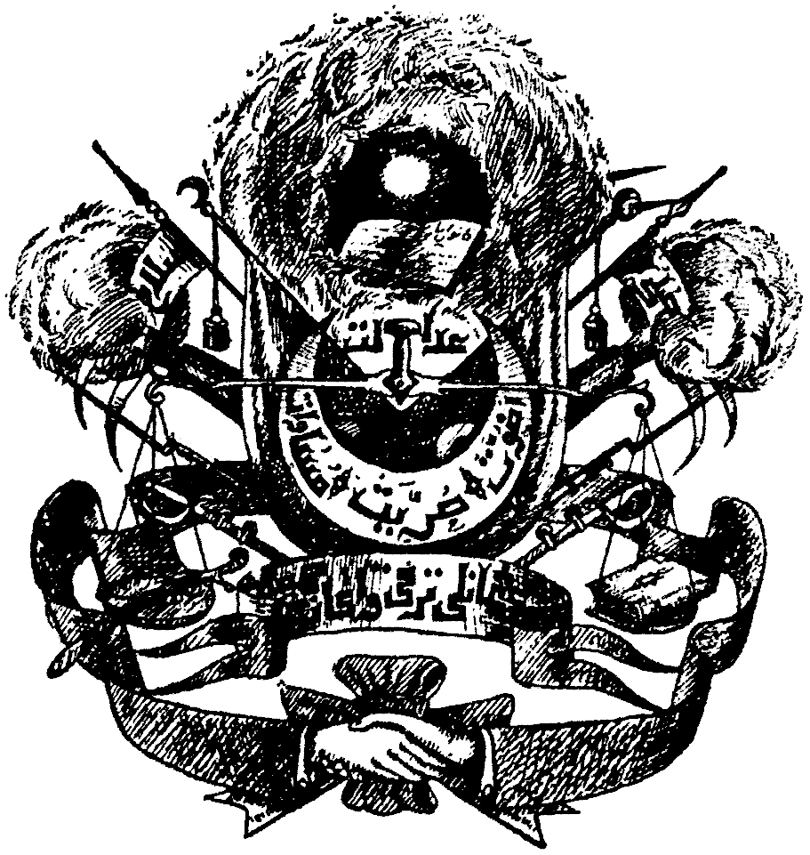
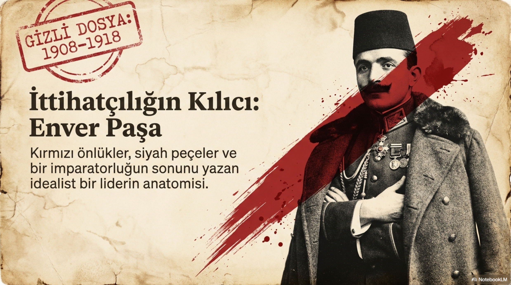
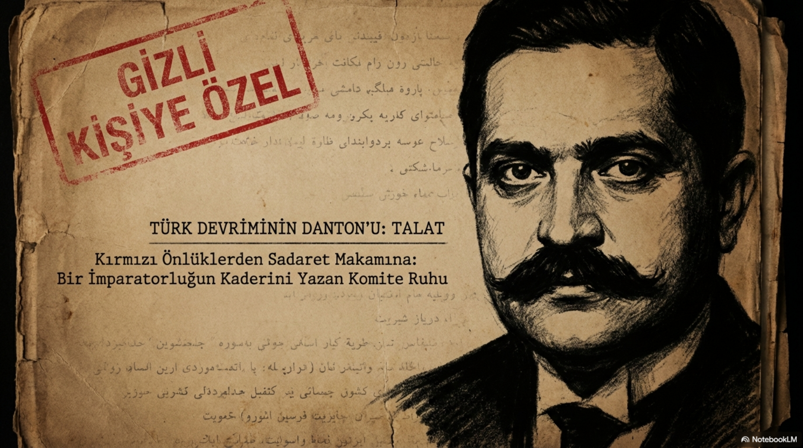
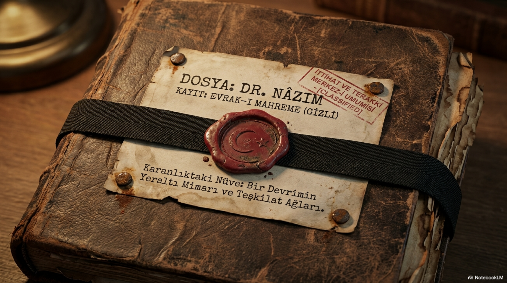

Yayın, sürgün ve fikir tartışması
Paris hattında gazete, risale, Avrupa kamuoyu ve muhalefet dili öndeydi. Hareket kendisini önce kelimelerle kurdu.

1889 / Askerî Tıbbiye / Selanik / Paris
Bir parti olmadan önce gizli bir cemiyetti. Cemiyet olmadan önce de devletin gidişatına duyulan rahatsızlığın adıydı.
Cevap tek kelime değil. İstibdat korkusu vardı. Hafiye ve jurnal ağı vardı. Devletin dağılmasını izleme endişesi vardı.
Avrupa baskısı, Balkanlardaki ayrılıkçı hareketler, içerideki idari çürüme ve ordudaki gerilik aynı yere bakıyordu: Bu düzen böyle gitmez.
Paris hattında gazete, risale, Avrupa kamuoyu ve muhalefet dili öndeydi. Hareket kendisini önce kelimelerle kurdu.
Selanik hattında Makedonya gerilimi, gizli hücreler ve silahlı hareket ihtimali vardı. 1908'e giden yol bu iki damarın birleşmesiyle açıldı.
Dosya 02 / Arma
En tepede tuğra değil, Kanun-i Esasi fikri vardır. Yanlarda kalem ve silah durur. Terazinin bir kefesinde Kur'an-ı Kerim, diğer kefesinde hançer yer alır.
Arma bu yüzden süs değil. İttihatçılığın kendisini nasıl anlatmak istediğini gösteren görsel bir metindir: anayasa, hürriyet, silah, adalet, din, imparatorluk ve kardeşlik aynı yüzeyde durur.

Kırmızı önlük, siyah peçe, Kur'an-ı Kerim, hançer, tabanca, gözleri bağlı yeni üye... Film sahnesi gibi duruyor. Fakat sürgün, hapis ve takip gerçekse dramatik olan yemin değil, dönemin kendisidir.
Dosya 03 / Kadro

Hürriyet kahramanlığı, Babıali, savaş ve kırılma çizgisi.

Posta ağı, örgüt aklı ve iktidarın merkezindeki siyaset.

İstanbul muhafızlığı, Suriye hattı ve iki ayrı hayat.

Modernleşme fikri, firar, birleşme ve kadro aklı.

Kalem, mahkeme, teşkilat ve sertleşen siyaset dili.

Ordu-siyaset gerilimi, kongre, Sofya ve devlet aklı.

Hitabet, meydan, fedailik ve ihtilalin sesi.
Paris hattı, Meşveret çevresi ve fikrî muhalefet dili.
Askerî Tıbbiye'de İttihâd-ı Osmânî adıyla ilk yapı kurulur.
Paris hattında İttihat ve Terakki Cemiyeti adı öne çıkar.
Paris ve Selanik damarları birleşir; örgüt daha etkili bir hatta girer.
Meşrutiyet yeniden ilan edilir. Gizli cemiyet artık Osmanlı siyasetinin merkezindedir.
Babıali Baskını sonrasında iktidar pratiği sertleşir; cemiyet-devlet ilişkisi değişir.
Okuma notu
İttihat ve Terakki'yi yalnızca kahramanlık ya da felaket kalıbına sıkıştırınca konu fakirleşiyor. Daha iyi soru şu: Dağılmakta olan bir imparatorlukta hürriyet isteyen kadro, iktidara yaklaşınca hangi bedelleri üretir?
Başa dön